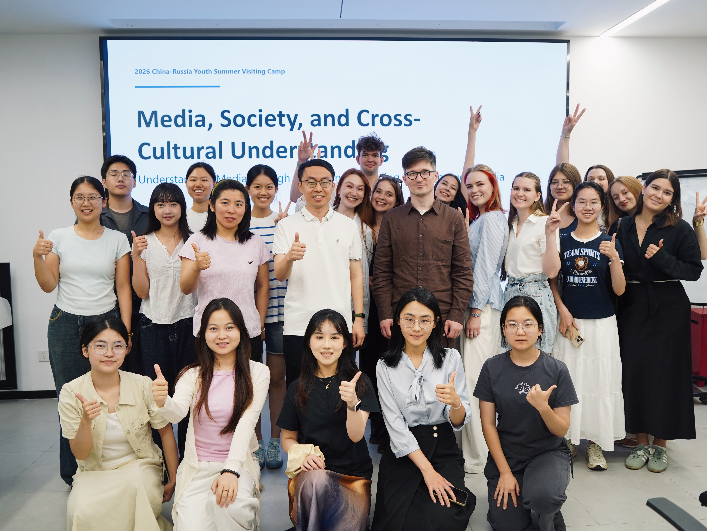
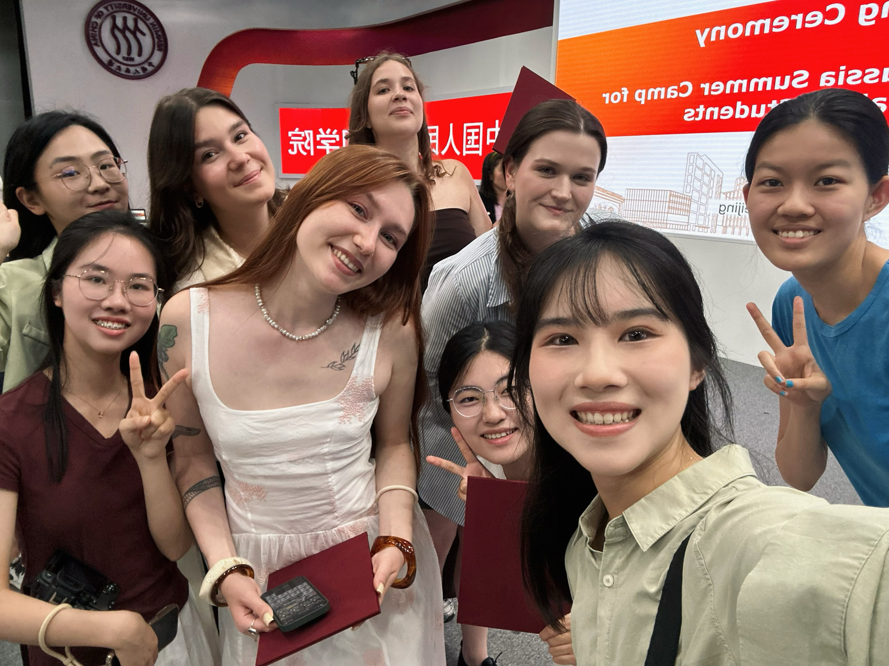

When technology meets love: Algorithms, interfaces, and the rise of unconventional intimacy [当技术遇到爱：算法、界面与非常态亲密关系的崛起]
Dong, C., Lin, Q., & Liu, L.
News and Writing [新闻与写作](CSSCI) · (11), 5–13
2025
From content creators to entrepreneurs: What does “wanghong” really mean? A review of The Influencer Factory [从内容生产者到企业家：“网红”究竟意味着什么?——评《网红工厂：一种YouTube企业化人格的马克思主义理论》]
Dong, C., Liu, L., & Lin, Q.
China Book Review [中国图书评论] · (12), 20–29 · Book review
2025
A review of research on Chinese influencers and livestreamers, 2023–2024 [中国网红主播研究2023—2024综述]
Lin, Q., & Dong, C.
Yearbook of Journalism and Communication of China [中国新闻传播学年鉴] · Editorial Office of Journalism & Communication [新闻与传播研究编辑部]
2024
“Adhesive” and “metronome”: Thematic evolution of online public opinion through a multidimensional social network analysis of the Li Jiaqi controversy [“黏连剂”与“节拍器”：网络舆论议题的主题演化——对李佳琦“怒怼网友”事件的多维社会网络分析]
Dong, C., & Lin, Q.
Media Observer [传媒观察](CSSCI) · (6), 24–34
2024
Social interaction on platforms: Three strands of research on interpersonal communication on social media [交往在平台：社交媒体人际传播研究的三条线索]
Dong, C., Xu, Y., & Lin, Q.
News and Writing [新闻与写作](CSSCI) · (9), 5–14
Reprinted in full in Xinhua Digest [《新华文摘》全文转载]
2024
An annual review of Western communication research in 2023 [2023年西方传播学研究年度报告]
Dong, C., Xu, Y., Ding, Y., Yu, W., Lin, Q., Chen, Q., & Wang, H.
Journalism Review [新闻记者](CSSCI) · (1), 81–101, 41
2022
Innovating empathic communication in mainstream media short videos: A case study of Xiaoyang Video [主流媒体短视频共情传播的创新路径研究——以小央视频为例]
Lin, Q.
View on Publishing [出版广角](CSSCI Expanded) · (6), 93–96
2022
Communication strategies for mainstream media short videos from a technology empowerment perspective [技术赋能视角下主流媒体短视频传播路径研究]
Ji, L., & Lin, Q.
China Radio [中国广播] · (3), 9–14
Conference presentations 学术会议
Oct 2026
From an Object of Remembrance to a Relational Other: The Workings and Limits of AI Resurrection within a Media Ensemble of Life and Death [从纪念对象到关系对象：生死媒介丛中AI复生的运作与边界]
Lin, Q.
Communication and China | Fudan Forum (2026) [传播与中国｜复旦论坛（2026）]
Conference presentation · Fudan University, Shanghai, China
Jun 2025
Digital Healing Arts: Imaginaries and Practice of “AI Resurrection” under Chinese Views on Life and Death [数字疗愈术：中国生死观下的“AI复生”想象与实践]
Lin, Q.
75th Annual International Communication Association Conference (ICA) [国际传播协会第75届年会]
Oral presentation · Denver, USA
Jul 2025
In the Name of “Sisters”: Managed Sisterhoods as Gendered Labor in Chinese Fashion Influencer Industry
Lin, Q.
International Association for Media and Communication Research Conference (IAMCR) [国际媒介与传播研究学会年会]
Oral presentation · Singapore
Aug 2025
Curating the Real-time: Classification Labor in Chinese E-commerce Live-streaming
Lin, Q., & Zhao, R.
American Sociological Association Annual Meeting (ASA) [美国社会学学会年会]
Oral presentation · Chicago, USA
Nov 2024
Manufacturing authenticity: Influencers’ authenticity labor and its precarity [制造本真：网红的本真性劳动及其不稳定性]
Dong, C., & Lin, Q.
17th Chinese Young Communication Scholars Forum [第十七届中国青年传播学者论坛]
Oral presentation · Shanghai, China
Aug 2024
Digital healing arts: Imaginaries and practices of “AI resurrection” under Chinese views on life and death [数字疗愈术：中国生死观下的“AI复生”想象与实践]
Lin, Q.
Fourth Media Sociology Summer School, Main Forum [第四届媒介社会学暑期班主论坛]
Oral presentation · Yunnan, China
Apr 2024
Understanding wanghong: An academic framework for a popular concept [理解“网红”：一个流行概念的学术框架]
Lin, Q.
Fifth Qingmei Forum [第五届青梅论坛]
Poster presentation · Guangzhou, China
Honors & awards 荣誉奖项
2021
National Scholarship (Undergraduate) [本科生国家奖学金]
2024
National Scholarship (Master’s) [硕士生国家奖学金]
Oct 2026
Doctoral Academic Scholarship [博士生学业奖学金]
Ranked 1st in the doctoral cohort [同年级博士生第1名]
Oct 2026
Doctoral Special-Class Scholarship for Academic Excellence [博士生学习优秀特等奖学金]
Ranked 1st in the doctoral cohort [同年级博士生第1名]
2024
First-Class Academic Scholarship, Renmin University of China [中国人民大学学业一等奖学金]
2022
Yu Gang–Song Xiao Scholarship [于刚·宋晓奖学金]
Top 1%
2020–2022
First-Class Scholarship, Wuhan University [武汉大学甲等奖学金]
2020
Blue Moon Scholarship [蓝月亮专项奖学金]
Jun 2025
Beijing Outstanding Graduate [北京市优秀毕业生]
Jun 2023
Outstanding Graduate, Wuhan University [武汉大学优秀毕业生]
2023
Grand Prize, Beijing Graduate English Speech Contest [北京市研究生英语演讲比赛特等奖]
2023
Model Merit Student, Wuhan University [武汉大学三好学生标兵]
Top 1%
2024
Merit Student, Renmin University of China [中国人民大学三好学生]
2020–2023
Merit Student, Wuhan University [武汉大学三好学生]
Awarded in each of four consecutive years
2025
Outstanding Youth League Member, Renmin University of China [中国人民大学优秀共青团员]
2020–2022
Social Activities Award, Wuhan University [武汉大学社会活动积极分子]
Translation projects 译著项目
2025–2026
The Craft of Research, 5th edition
Lead translator of the Chinese edition [第一译者] · Xinhua Publishing House [新华出版社] · In proofreading; not yet published
2024–2025
In the Meantime: Temporality and Cultural Politics
Completed the full initial Chinese translation independently [独立完成全书翻译初稿] · China Renmin University Press [中国人民大学出版社] · In proofreading; not yet published
Other academic experience 其他学术经历
Aug 2024
Fudan University Graduate Summer School on New Media and Just Communication in the Global Information Society [复旦大学第十三届“新媒体与全球信息社会的公正传播”研究生暑期学校]
Delivered the closing remarks as the sole master’s student representative.
2022
Undergraduate research project lead [大学生创新创业训练项目负责人]
A study of the communication effects of neo-frugality advertising among university students [新节俭主义广告在大学生群体中的传播效果研究]
Student assistant [学生助理] · School of Journalism and Communication, Renmin University of China · Beijing
Supported the organization and coordination of the full programme, including academic sessions, media visits, cultural exchange, and collaborative video production.


Industry experience 实习经历
2024
ShowWorld [看看世界北京文化有限公司]
E-commerce livestreaming coordination [电商直播统筹]
2023
ByteDance · TikTok cross-border business [字节跳动TikTok跨境商业部门]
Advertising operations [广告运营]
2022
ByteDance · Feishu PR & Marketing [字节跳动飞书公关市场部]
Social media operations [新媒体运营]
2022
Xinhua News Agency · New Media Department [新华社新媒体部]